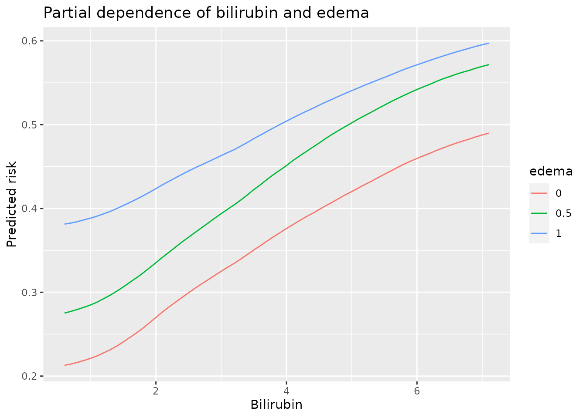
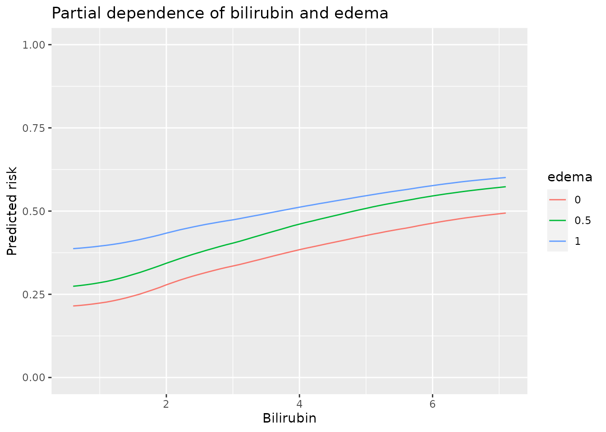

This article covers core features of the aorsf package. Separate articles will cover these features in more detail.
Background: ORSF
The oblique random survival forest (ORSF) is an extension of the axis-based RSF algorithm that can be found in several R packages, including RandomForestSRC, party, and ranger.
What is an oblique decision tree?
Decision trees are developed by splitting a set of training data into two new subsets, with the goal of having more similarity within the new subsets than between them. This splitting process is repeated on the resulting subsets of data until a stopping criterion is met. When the new subsets of data are formed based on a single predictor, the decision tree is said to be axis-based because the splits of the data appear perpendicular to the axis of the predictor. When linear combinations of variables are used instead of a single variable, the tree is oblique because the splits of the data are neither parallel nor at a right angle to the axis.

Decision trees for classification with axis-based splitting (left) and oblique splitting (right). Cases are orange squares; controls are purple circles. Both trees partition the predictor space defined by variables X1 and X2, but the oblique splits do a better job of separating the two classes.
Accelerated ORSF
The purpose of aorsf (‘a’ is short for accelerated) is to provide routines to fit ORSFs that will scale adequately to large data sets. For example, aorsf::orsf() runs about 500 times faster than its predecessor, obliqueRSF::ORSF().
To fit an accelerated ORSF model, use the orsf function:
library(aorsf)
library(ggplot2)
set.seed(329)
orsf_fit <- orsf(data = pbc_orsf,
formula = Surv(time, status) ~ . - id,
n_tree = 2500)
orsf_fit
#> ---------- Oblique random survival forest
#>
#> N observations: 276
#> N events: 111
#> N trees: 2500
#> N predictors total: 17
#> N predictors per node: 5
#> Average leaves per tree: 24
#> Min observations in leaf: 5
#> Min events in leaf: 1
#> OOB stat value: 0.84
#> OOB stat type: Harrell's C-statistic
#>
#> -----------------------------------------you may notice that the first input of aorsf is data. This is a design choice that makes it easier to use orsf with pipes (i.e., %>% or |>). For instance,
In addition to their reputation for slow computing, oblique decision trees are considered less interpretable than their axis-based counterparts. The opinionated developer of aorsf disagrees with this sentiment, and has included routines in aorsf that use coefficients from linear combinations of input variables to estimate variable importance and identify pair-wise interactions.
Variable importance
aorsf provides multiple ways to compute variable importance.
- To compute negation importance, ORSF multiplies each coefficient of that variable by -1 and then re-computes the out-of-sample (sometimes referred to as out-of-bag) accuracy of the ORSF model.
variable_importance <- orsf_vi_negate(orsf_fit)
variable_importance
#> bili age ascites protime copper
#> 0.0134923942 0.0085434466 0.0057824547 0.0046363826 0.0037507814
#> spiders edema stage sex ast
#> 0.0036465930 0.0028751029 0.0022921442 0.0016670140 0.0012502605
#> hepato alk.phos chol trig trt
#> -0.0003125651 -0.0012502605 -0.0017191081 -0.0018232965 -0.0026568035
#> platelet
#> -0.0028130861Partial dependence
edema == 1 may modify the effect of bili. We can use the orsf_pd_summary() function (pd = partial dependence) to explore how these variables influence the expected prediction from ORSF. Below, we look at partial dependence at a prediction horizon of 5 years.
# make a list containing the variable values you
# want to compute partial dependence for
pd_spec <- list(edema = c("0", "0.5", "1"),
bili = seq(0.6, 7.1, by = 0.1))
# orsf_pd_summary automatically computes pd for all combinations
# in the list (this can be turned off with expand_grid = FALSE)
pd_data <- orsf_pd_summary(object = orsf_fit,
pd_spec = pd_spec,
expand_grid = TRUE,
pred_horizon = 365.25 * 5)
ggplot(pd_data) +
aes(x = bili, y = mean, col = edema) +
geom_line() +
labs(y = 'Predicted risk',
x = 'Bilirubin',
title = 'Partial dependence of bilirubin and edema') +
scale_y_continuous(limits = c(0, 1))
The presence of edema clearly impacts predicted risk, which makes it hard to see the interaction effect in this plot. Let’s align the partial dependence values for the edema subgroups so that each curve will start at a value of 0
# aligning predictions at lowest value of bili
min_ed_0 <- with(pd_data, mean[edema == "0" & bili == 0.6])
min_ed_1 <- with(pd_data, mean[edema == "0.5" & bili == 0.6])
min_ed_2 <- with(pd_data, mean[edema == "1" & bili == 0.6])
pd_data_aligned <-
within(pd_data, {
value <- mean
value[edema == "0" ] <- value[edema == "0" ] - min_ed_0
value[edema == "0.5"] <- value[edema == "0.5"] - min_ed_1
value[edema == "1" ] <- value[edema == "1" ] - min_ed_2
})
head(pd_data_aligned)
#> edema bili mean lwr medn upr value
#> 1: 0 0.6 0.2149491 0.01080575 0.1137336 0.7657705 0.000000000
#> 2: 0.5 0.6 0.2741353 0.03608109 0.1817965 0.7841916 0.000000000
#> 3: 1 0.6 0.3871624 0.16876186 0.3089575 0.8766335 0.000000000
#> 4: 0 0.7 0.2164976 0.01087216 0.1138735 0.7712087 0.001548474
#> 5: 0.5 0.7 0.2762397 0.03626453 0.1829204 0.7878749 0.002104399
#> 6: 1 0.7 0.3886400 0.16936039 0.3116935 0.8779078 0.001477504With the aligned partial dependence values we can see the interaction effect clearly. Increasing bilirubin solicits a greater increase in predicted risk for patients with no edema (edema == 0), untreated edema (edema == 0.5), or successfully treated edema (edema == 0.5) compared to patients with therapy-resistant edema (edema == 1).
ggplot(pd_data_aligned) +
aes(x = bili, y = value, col = edema) +
geom_line() +
labs(y = 'Predictions centered at Bilirubin = 0.6',
x = 'Bilirubin',
title = 'Interaction between bilirubin and edema') +
scale_y_continuous(limits = c(0, 1))
The similarity in trajectories for patients with edema == 0 and edema == 0.5 suggests that edema == 1 has the strongest modifying effect of bilirubin. As a sanity check, we can fit a Cox regression model and conduct a likelihood ratio test for this interaction:
library(survival)
anova(coxph(Surv(time,status) ~ edema * bili, data = pbc_orsf))
#> Analysis of Deviance Table
#> Cox model: response is Surv(time, status)
#> Terms added sequentially (first to last)
#>
#> loglik Chisq Df Pr(>|Chi|)
#> NULL -550.19
#> edema -524.61 51.1681 2 7.744e-12 ***
#> bili -502.51 44.1953 1 2.972e-11 ***
#> edema:bili -498.64 7.7459 2 0.0208 *
#> ---
#> Signif. codes: 0 '***' 0.001 '**' 0.01 '*' 0.05 '.' 0.1 ' ' 1The interaction p-value of 0.0208 above should not be interpreted in the usual way because it was not an apriori hypothesis, (I used other software to score every pairwise interaction in the data and picked one with a strong score). However, it is nice to see that an interaction identified by ORSF’s partial dependence function is also identified with a traditional modeling strategy.
Summarize ORSF models
Getting straight to variable importance and partial dependence in a direct way can often be helpful in exploratory analyses. When you want a lot of information for just a little code, orsf_summarize_uni() is the tool for you:
orsf_summarize_uni(orsf_fit,
n_variables = 5,
pred_horizon = 365.25 * 5)
#>
#> -- bili (VI Rank: 1) ---------------------------
#>
#> |---------------- risk ----------------|
#> Value Mean Median 25th % 75th %
#> 0.80 0.2321709 0.1250703 0.04511286 0.3822285
#> 1.40 0.2526454 0.1452361 0.05893072 0.4017982
#> 3.52 0.3716990 0.2879513 0.16520375 0.5483311
#>
#> -- age (VI Rank: 2) ----------------------------
#>
#> |---------------- risk ----------------|
#> Value Mean Median 25th % 75th %
#> 41.5 0.2738421 0.1429054 0.04190491 0.4670137
#> 49.7 0.3012377 0.1711906 0.04922133 0.5312928
#> 56.6 0.3324703 0.2206562 0.07135028 0.5659502
#>
#> -- ascites (VI Rank: 3) ------------------------
#>
#> |---------------- risk ----------------|
#> Value Mean Median 25th % 75th %
#> 0 0.2962853 0.1559449 0.04856002 0.5312403
#> 1 0.4707099 0.3853747 0.27346654 0.6542754
#>
#> -- protime (VI Rank: 4) ------------------------
#>
#> |---------------- risk ----------------|
#> Value Mean Median 25th % 75th %
#> 10.0 0.2836244 0.1532223 0.04709130 0.5059426
#> 10.6 0.2956075 0.1611090 0.05140038 0.5249728
#> 11.2 0.3168198 0.1890442 0.06756468 0.5346692
#>
#> -- copper (VI Rank: 5) -------------------------
#>
#> |---------------- risk ----------------|
#> Value Mean Median 25th % 75th %
#> 42.8 0.2656012 0.1388691 0.04530208 0.4752255
#> 74.0 0.2823505 0.1590903 0.05506762 0.5037839
#> 129 0.3358382 0.2179729 0.10527331 0.5494800
#>
#> Predicted risk at time t = 1826.25 for top 5 predictorsWhat about the original ORSF?
The original ORSF (i.e., obliqueRSF) used glmnet to find linear combinations of inputs. aorsf allows users to implement this approach using the orsf_control_net() function:
orsf_net <- orsf(data = pbc_orsf,
formula = Surv(time, status) ~ . - id,
control = orsf_control_net(),
n_tree = 50)net forests fit a lot faster than the original ORSF function in obliqueRSF. However, net forests are still much slower than cph ones:
# tracking how long it takes to fit 50 glmnet trees
print(
t1 <- system.time(
orsf(data = pbc_orsf,
formula = Surv(time, status) ~ . - id,
control = orsf_control_net(),
n_tree = 50)
)
)
#> user system elapsed
#> 4.681 0.000 4.682
# and how long it takes to fit 50 cph trees
print(
t2 <- system.time(
orsf(data = pbc_orsf,
formula = Surv(time, status) ~ . - id,
control = orsf_control_cph(),
n_tree = 50)
)
)
#> user system elapsed
#> 0.034 0.000 0.033
t1['elapsed'] / t2['elapsed']
#> elapsed
#> 141.8788aorsf and other machine learning software
Generally, aorsf follows conventions set by the R packages randomForest and randomForestSRC. For example, the print method for aorsf models is very similar to randomForestSRC models, as is the specification of computing variable importance and the objects returned by variable importance functions. Similar to randomForestSRC, aorsf allows and recommends partial dependence to be estimated using out-of-bag data.
The unique feature of aorsf is fitting oblique random survival forests fast while maintaining strong prediction accuracy. RLT and obliqueRSF both fit oblique random survival forests, but aorsf does so faster. ranger and randomForestSRC fit survival forests, but neither package supports oblique splitting. obliqueRF fits oblique random forests for classification and regression, but not survival. PPforest fits oblique random forests for classification but not survival. The default prediction behavior for aorsf models is to produce predicted risk at a specific prediction horizon, which is not the default for ranger or randomForestSRC.